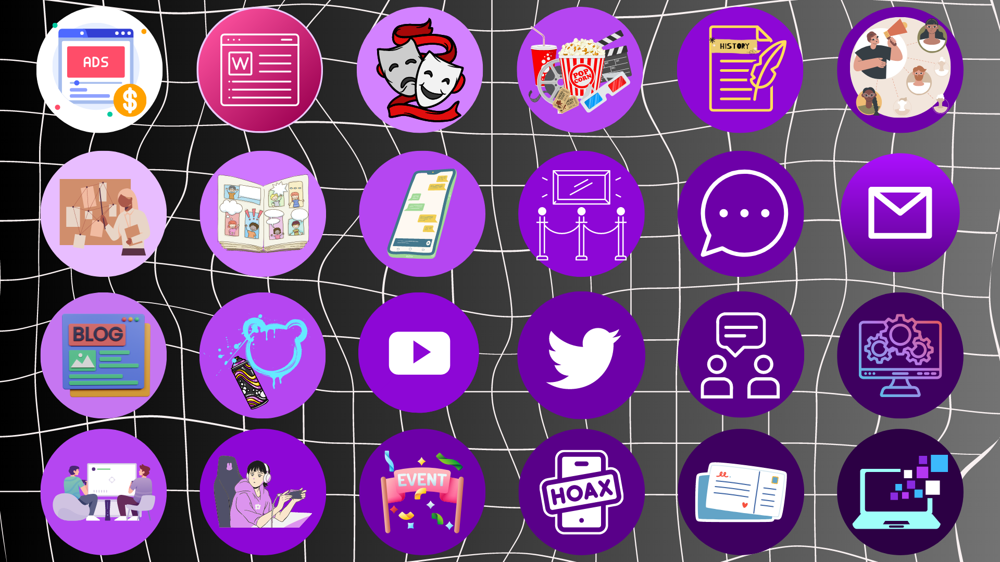

Origem
O primeiro ARG realizado no Brasil foi o projeto Se7e Zoom,[carece de fontes] criado para o creme dental Close-Up em 2001. O desafio central da história era revelar a identidade da modelo virtual Sete Zoom. A trama envolveu o desenvolvimento de várias técnicas inovadoras para aquele momento, como: implantação de um chatter bot, simulação de ataques hacker ao site da Sete Zoom, sites fakes do fã clube da personagem, utilização de avatares 3D, contratação de equipe de "seeders" para gerar buzz sobre o projeto em comunidades virtuais, dezenas de emails falsos etc. Tudo para tornar a personagem Sete Zoom uma celebridade na Web. O ponto alto da história foi a publicação de um ensaio sensual da modelo no site The Girl, que gerou todo tipo de polêmica. Quando a personagem estava no "auge da fama", uma campanha publicitária foi lançada para comunicar que a marca Close-Up tinha contratado a modelo para divulgar suas iniciativas online.
O que é
Um jogo de realidade alternativa (em inglês: Alternate Reality Game, abreviado ARG) é um tipo de jogo eletrônico que combina as situações de jogo com a realidade, recorrendo às mídias do mundo real, de modo a fornecer aos jogadores uma experiência interativa. Os ARGs envolvem os jogadores nas histórias, encorajando-os a explorar a narrativa, a resolver os desafios e a interagir com as personagens do jogo. Este tipo de jogos desenvolve-se a partir de sites, e-mails, telefonemas, entre outros meios de comunicação comuns.
Como criar um ARG
Caracteristicas de um ARG
- Narrativa
- Espaço(publico/urbano/midiatico)
- Estetica de "isto não é um jogo"
- Meta-comunicação
- Colaboração
- Fragmentação/desafio("um sussuro pode ser mais alto que um grito")
Exemplos de progressão de um ARG
- ATO I:Inicio
- ATO II: Meio/Climax
- ATO III: Conclusão
Problemas tipicos de ARG's:
- Historias mal contadas (e historias ruins)
- Não entreter /sem imersão
- Rabbit holeschatos/entediantes e falta de interatividade
- Ser malicioso/ofensivo
- Ser morno,brando...inexpressivo
- Falta de um final bem definido
- Ter apenas o que ja e esperado. nao inovar/nao engajar
Tipos de papeis de profissionais envolvidos com ARG's:
- Escrita da narrativa
- Pesquisa
- Direçao
- Artistas visuais
- criaçao de puzzles(quebra-cabeças)
Glossario:
- Puppetmaster (Mestre de fantoches): designers do jogo
- Pontos de entrada: sao os pontos que confluem no ribbit hole.devvem existir varios pontos de entrada para a historia do ARG.
- Rabbit hole: site que concentra informaçoes do jogo
- Breadcrumbs (Migalhas de pao): pistas que levam a outras pistas. Geralmente fazem parte da trilha a ser caminhada duranteo ARG
- Trilha de puzzles: quebra-cabeças interligados que levam a novos misterios
- TINAG: "this is not a game" é o mantra dos ARG's
Definir açoes/objetivos com verbos:resolva...;encontre...;colete...;crie...;escreva...;descubra...;vá para...
Termos comuns em ARG's:
- ???: os varios pontos de entrada para a historia do ARG,pontos que confluem no rabbit hole
- muitas vezes os ARGS sao portas de entrada para um filme, um game ou uma narrativa (exemplo: The BEAST,do Inteligencia Artificial (2001)e i love bees,(2004)do universo do game Halo 2)
Tres elementos essenciais para games:
Objetivo,Regras e Feedback
Objetivo
- O puppetmaster conhece o objetivo, mas este nao fica claro para os participantes-eles precisam imaginar partes do jogo
- O puppertmaster conhece o objetivo (objetivo), mas isso não fica claro para os participantes - eles precisam imaginar partes do jogo
- As regras são como você "que você precisa seguir a trilha... migalhas de pão para descobrir o que está acontecendo
- O feedback chega ao participante conforme as pistas se tornam claras, elas podem ser intrínsecas ou extrínsecas
- O puppertmaster conhece o goal (objetivo), mas este não fica claro para os participantes - eles precisam imaginar partes do jogo
- As regras são as que você "que você precisa seguir a trilha... migalhas de pão para descobrir o que é está acontecendo"
- O feedback chega ao participante à medida que as pistas se tornam claras, elas podem ser intrínsecas ou extrínsecas
- Websites e hotsites
- Wikis e blogs
- Portal
- Microsites
- Google Maps
- Perfis, grupos, comunidades em redes sociais
- Redes Sociais
- Apps e Softwares
- Jogos
- Documentos
- Vídeos
- Imagens
- Memes
- Ligações telefônicas
- SMS
- Cartas e pacotes
- Cartaz
- Boca-a-boca
- Grafitte
- Anúncios (publicidade)
- Quadrinhos
- Instalações
- Fash mobs
- Sinais
- Eventos
- Máquinas
- Objetos
- Atores, atrizes e encenações
- Mecanismo de Busca
- Boato
- Polêmicas
- Mistérios
- Pistas
- Esconder
- Resolver
- Lógica
- Referências
Regras
Três elementos essenciais para games

As principais mídias para ARG's são
Pulverização de fragmentos do ARG
Mais conhecidos
Marble Hornets(20 de jun. de 2009-20 de jun. de 2014)
Oque é
Marble Hornets é uma série da web de jogo de realidade alternativa do YouTube inspirada nos mitos online do Slender Man. O primeiro vídeo foi postado no YouTube em 20 de junho de 2009, após uma postagem que seu criador, Troy Wagner, fez no fórum Something Awful no dia anterior.
Historia
Temporada 1
- A série segue Jay Merrick (Troy Wagner), um jovem que tenta descobrir o que aconteceu durante as filmagens de "Marble Hornets", um filme de estudantes inacabado dirigido pelo amigo de Jay, Alex Kralie (Joseph DeLage). Três anos antes, Alex terminou abruptamente o projeto depois de apenas dois meses de produção. Antes de cortar o contato com Jay, Alex lhe deu as fitas contendo as imagens do filme e disse a Jay para nunca mais falar sobre isso com ele. Ao assistir as fitas, Jay descobre que as filmagens pareciam ser prejudicadas por uma figura conhecida como " O Operador ". O Operador logo começa a invadir a vida pessoal de Jay, induzindo-o a instalar câmeras em seu apartamento. Postar as fitas no YouTube como "Entradas" também faz uma resposta críptica e ameaçadora de um usuário conhecido como "Totheark". A investigação de Jay o leva a se encontrar com um dos membros do elenco do filme, Tim Wright (Tim Sutton), e o envia para a casa abandonada de outro membro do elenco, Brian Thomas (Brian Haight), onde ele tem seu primeiro encontro com uma figura mascarada. . Jay visita uma torre vermelha para encontrar uma fita que mostra Alex deixando seu cinegrafista Seth Wilson (Seth McCay) em um prédio abandonado quando confrontado com o Operador, com Alex determinando que todo o elenco e a equipe de "Marble Hornets" estão desaparecidos ". Eventualmente, ameaças de perseguição de Totheark faz com que Jay fuja de seu apartamento, que é posteriormente incendiado. Jay recebe vídeo no correio de Alex e sua namorada, Amy Walters (Bethann Williams), sendo atacado pelo operador. Como resultado, Jay sai em busca de Alex.
Temporada 2
- Sete meses depois, um amnésico Jay acorda em um quarto de hotel e se encontra com uma jovem semelhantemente amnésica, Jessica Locke (Jessica May), que posteriormente desaparece. Ele abre um cofre em seu quarto de hotel contendo vídeos e um disco rígido revelando os eventos que ocorreram durante os sete meses anteriores. A filmagem mostra que, durante os sete meses que faltam, Jay teve um encontro com Alex, que os viu formar uma aliança para encontrar Amy. Jay também aprendeu que a figura mascarada era Tim. Tendo sido enlouquecido pelo terror do Operador e desconfiado de Jay espioná-lo, Alex matou um estranho cujo corpo foi então levado pelo Operador. Os vídeos também revelam que uma figura encapuzada começou a seguir Jay, e que Jessica era amiga e companheira de quarto de Amy, que, quando contatada por Jay em sua investigação, foi inadvertidamente arrastada para o caso. Quando Alex tentou matar Jay e Jessica por seu envolvimento, os dois escaparam com a ajuda de Tim e reservaram quartos no hotel mencionado, onde o Operador os atacou e apagou suas memórias.
Temporada 3
- Sem pistas para encontrar Alex ou Jessica, Jay pede a Tim o pretexto de terminar "Marble Hornets". Enquanto Tim está inicialmente furioso ao saber sobre os verdadeiros motivos de Jay, ele decide continuar a ajudá-lo depois que a figura encapuzada rouba sua medicação de sua casa, fazendo com que ele tenha um colapso psicológico. É revelado que Tim não se lembra de nada que tenha feito em seu estado "mascarado", que ele estava internado em um hospital psiquiátrico devido a alucinações que ele teme serem causadas pelo Operador, e que sua nova medicação é capaz de bloquear ele de mudar para o seu estado "mascarado". A investigação de Tim e Jay os leva a encontrar repetidamente O Operador, que os sujeita a tormento físico e psicológico. Tim revela ter escondido um vídeo mostrando que ele (em seu estado mascarado) e a figura encapuzada são os responsáveis pelo desaparecimento de Jessica e posterior encontro com Alex e The Operator, com essa revelação causando um colapso na relação de trabalho de Jay e Tim. Jay aparece na casa de Tim com uma faca e zíperes, mas ele é dominado e amarrado por Tim, antes de ser libertado pela figura encapuzada. Tim e Jay partiram para encontrar Alex separadamente. Jay é mais tarde baleado e morto por Alex, levando Tim a assumir o canal "Marble Hornets". Um confronto entre Tim e a figura encapuzada leva à figura encapuzada caindo para a morte, após o que Tim descobre que a figura encapuzada era Brian. Tim, percebendo que Alex pretende matá-lo, tenta atrair Alex para sua casa, com a conseqüência da casa ser queimada até o chão por Alex. Durante o confronto final de Alex com Alex, Alex revela que ele quer matar qualquer um que tenha encontrado o Operador, pois ele acredita que isso evitará a disseminação da influência do Operador, e que ele já matou Amy, Sarah e Seth, além de Jay , sabe que Brian está morto e acredita que Jessica também está morta. Isso significa que Alex e Tim são os únicos remanescentes sobreviventes da gravação de "Marble Hornets", e que Tim é, portanto, o último alvo restante de Alex, após o qual ele pretende se matar. Na luta que se seguiu, Tim finalmente consegue matar Alex, esfaqueando-o várias vezes na garganta. Alex Quatro dias depois, Tim descarta sua máscara e se reúne com Jessica, que sobreviveu aos eventos do hotel, apesar de Alex ter pensado o contrário. Tim manteve escondido antes deste ponto, a fim de protegê-la de qualquer perigo adicional. O encontro final de Tim com Jessica termina ambiguamente; Tim começa a tossir quando a câmera distorce e depois corta para preto. Portanto, não se sabe se Jessica sobreviveu ao seu encontro com Tim ou se Tim agiu com base nas palavras finais de Alex após o efeito do Operador e a matou. Quando a filmagem é retomada, Tim está sozinho, indo embora e parando em um cruzamento, enquanto sirenes podem ser ouvidas à distância. A imagem final da série é uma placa de texto que diz simplesmente: "está tudo bem".
Cicada 3301
Oque é
Cicada 3301 é um nome dado a uma organização enigmática que, em seis ocasiões, postou um conjunto de quebra-cabeças e jogos de realidade alternativa complexos para possivelmente recrutar decifradores de códigos do público.
Proposito
O propósito declarado dos quebra-cabeças cada ano tem sido o de recrutar "indivíduos altamente inteligentes", embora o objetivo final permaneça desconhecido. Alguns alegaram que a Cicada 3301 é uma sociedade secreta com o objetivo de melhorar a criptografia, a privacidade e o anonimato. Outros alegaram que a Cicada 3301 é um culto ou uma religião. De acordo com declarações feitas aos vencedores do quebra-cabeça em 2012, a Cicada 3301 normalmente usa métodos de recrutamento sem base em quebra-cabeças, mas criou os enigmas Cicada porque eles estavam procurando por membros em potenciais com habilidades em criptografia e segurança de computador.
Resoluçao
O resultado final de todas as três rodadas de Cicada 3301 recrutamento ainda é um mistério. Os últimos quebra-cabeças conhecidos se tornaram altamente complexos e individualizados à medida que o jogo se desenrolava. Indivíduos anônimos afirmaram ter "ganho", mas a verificação da organização nunca foi feita e os indivíduos que fazem a alegação não são abertos a informações.[7][8][15] De acordo com uma pessoa que completou o quebra-cabeça de 2012, aqueles que resolveram os quebra-cabeças foram questionados sobre o seu apoio à liberdade de informação, privacidade e liberdade online e rejeição à censura. Aqueles que responderam satisfatoriamente nesta fase foram convidados a um fórum privado, onde foram instruídos a conceber e completar um projeto destinado a promover os ideais do grupo.Petscop
Oque é
Petscop é uma série da web de terror do YouTube de Tony Domenico, feita para se assemelhar a uma série do YouTube Let's Play. Os vídeos seguem "Paul", o protagonista, explorando e documentando um suposto 'jogo de PlayStation perdido há muito tempo', intitulado Petscop.
Historia
O surgimento desse game está envolto em mistério, ninguém sabe quem o encontrou, como e nem o porquê
de
se revelar só agora. Tudo o que se sabe até o momento, é que um jogador (aparentemente americano)
não
identificado, mas que usa o nome “Paul” dentro do game, “encontrou” o game e começou a testá-lo em
seu
antigo Playstation 1. Paul começou a fazer uploads de vídeos de gameplay desse desconhecido game,
aparentemente para mostrá-lo a um amigo, cuja identidade não sabemos.
Paul em seu primeiro vídeo, apresenta o estranho game: Petscop, um game cancelado do Playstation 1,
produzido por uma companhia chamada Garalina, em 1997. O game possui um visual poligonal bem
infantil, e
seu objetivo é capturar 48 Pets espalhados por oito fases diferentes. Paul então inicia o game,
apresentando seu início e mostrando como o game está inacabado.
O game se passa num lugar chamado “Gift Plane” (algo como “Plano dos Presentes”, “Terra dos
Presentes”,
em tradução livre). Dentro desse lugar, estão as entradas para cada um dos seus níveis, no entanto,
apenas um único nível está implementado, “Even Care”. Após ele, não há mais nada, apenas um espaço
vazio.
Segundo Paul, o game possuía uma nota junto dele. Nessa nota haviam duas mensagens escritas, a
primeira
toda em maiúsculo e com alguns erros de ortografia, a segunda possuía uma data e uma mensagem que
aparenta ter sido escrita por um dos desenvolvedores do game, o conteúdo da nota é (traduzido
livremente):
“EU DESCI AS ESCADAS E QUANDO CHEGUEI AO FUNDO, AO INVÉS DE PROSSEGUIR, EU VIREI A DIREITA E VIREI O HOMEM MONSTRO SOMBRA
13/6/97
Para Você:
"Por favor, vá para o meu website no adesivo, e também, vá para a sala do roneth e aperte: start, baixo, baixo, baixo, baixo, baixo, direita, start."
Paul seguiu as instruções, e ao inserir o código descrito na nota, o game sofre uma mudança. Primeiro, um som confirma a entrada do código, após isso, a música para por completo. E ao sair da fase Even Care, tudo muda por completo, o personagem que é controlado no game, um estranho ser careca, sem braços e com pés grandes, não volta para Gift Plane, mas sim para um cenário totalmente diferente. Uma enorme área aberta de grama e completamente escura.
Paul acessa um importante quarto, haviam miniaturas do estranho objeto que responde perguntas do game, além de uma nota no fundo do quarto, que diz:
"Eles entram com você. Você segura suas mãos.
Eles saem chorando em suas mãos, pois ninguém os amará, nunca mais.
“Ninguém me ama!”
Eles vagam pelo Newmaker Plane.”
Conforme os vídeos de Petscop eram enviados para a internet, mais e mais pessoas passavam a se interessar por eles, e tentar investigar mais sobre o game. Acontece que há uma ligação entre todas essas palavras, que remetem a um trágico caso real que aconteceu no ano 2000: a morte de Candace Newmaker. Paul parece ignorar o público que se formou ao redor do mistério de Petscop e que acompanha os vídeos. Em todos os vídeos, Paul dá pouquíssimas informações externas, e parece ter criado os vídeos apenas para que uma pessoa os assistisse, além do fato de não compartilhar nenhuma informação, imagem ou nada do tipo sobre o game em si e sobre a suposta “nota” encontrada junto do game. Os vídeos de Petscop são centrados em apresentar o game e suas bizarrices, já as teorias e ligações encontradas, foram acumuladas por centenas de pessoas acompanhando a história...
Qual é a verdade por trás de Petscop? Ninguém ainda sabe ao certo, e as coisas ficam mais e mais
estranhas conforme Paul e todos que acompanham seus vídeos se aprofundam mais e mais nesse
estranho game. Tudo ainda é muito misterioso, muitos acreditam que os vídeos de Petscop foram
gravados no passado, e que apenas agora estão sendo enviados para o Youtube.
O mistério de Petscop ainda não acabou. Na verdade, ele apenas começou